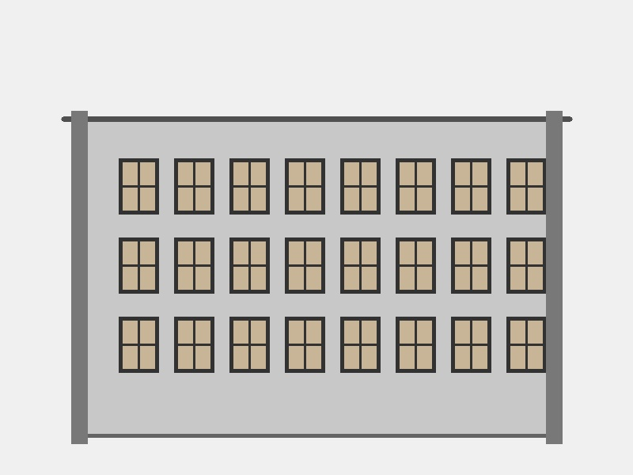
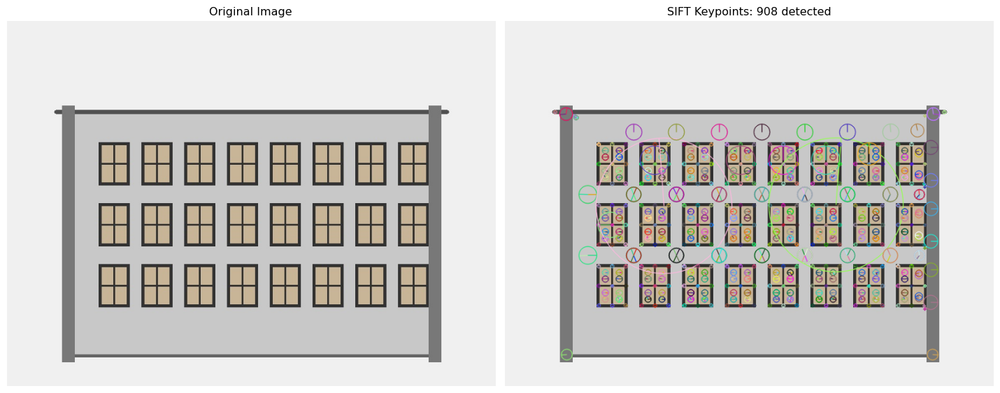
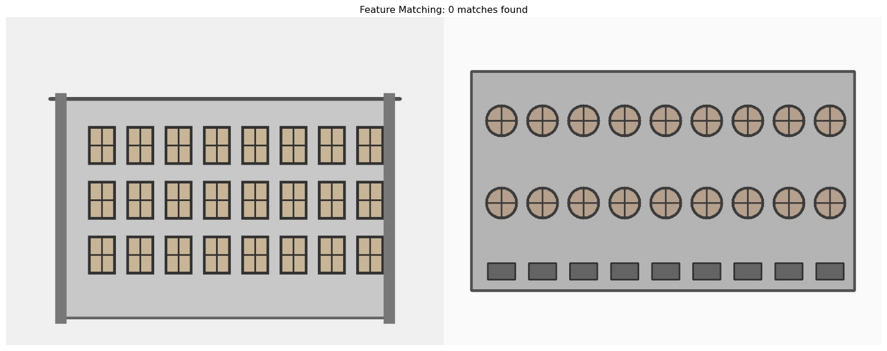
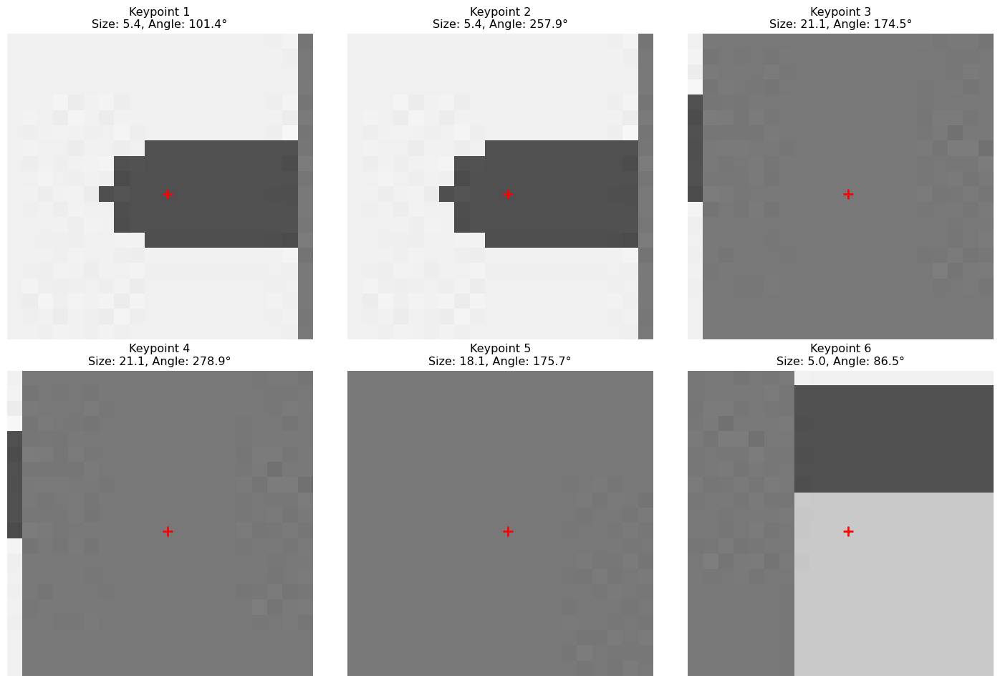

Feature detection visualization - geometric shapes with clear keypoints for detection
0.1 The Puzzle Piece Problem
Imagine you’re doing a 1000-piece jigsaw puzzle. How do you know which pieces fit together? You look for unique features—distinctive colors, patterns, corners, and edges that help you match pieces.
Computer vision faces the same challenge: How do we find the same object in different photos? The answer lies in feature detection—finding unique, recognizable points that remain consistent even when the image changes.
Today, we’ll unlock this superpower and teach computers to recognize objects across different photos, lighting conditions, and viewing angles!
Tip
Try it yourself! Open this interactive Colab notebook to experiment with feature detection and matching as we build this tutorial.
0.2 What Are Features?
Features are distinctive points in an image that are: - Unique: Stand out from their surroundings - Repeatable: Can be found again in different images - Stable: Don’t change much with lighting or viewpoint - Informative: Carry enough information for matching
Think of features as the “fingerprints” of an image!

Architectural features perfect for detection
In this architectural image, features would be detected at: - Window corners where frames meet - Building edges and wall boundaries
- Grid patterns of repeated windows - High-contrast regions between frames and glass
0.3 Your First Feature Detector: SIFT
SIFT (Scale-Invariant Feature Transform) is like having a super-detective that can find the same clues even if they’re rotated, scaled, or slightly changed:
Code
import cv2import numpy as npimport matplotlib.pyplot as pltimport requestsfrom io import BytesIOfrom PIL import Image# Load a sample image with clear features (architectural scene)def load_image_from_url(url): response = requests.get(url) img = Image.open(BytesIO(response.content))return cv2.cvtColor(np.array(img), cv2.COLOR_RGB2BGR)# Load our synthetic architectural image with clear featuresimg = cv2.imread('images/architecture-features.jpg')img_rgb = cv2.cvtColor(img, cv2.COLOR_BGR2RGB)gray = cv2.cvtColor(img, cv2.COLOR_BGR2GRAY)# Create SIFT detectorsift = cv2.SIFT_create()# Find keypoints and descriptorskeypoints, descriptors = sift.detectAndCompute(gray, None)print(f"SIFT found {len(keypoints)} keypoints")print(f"Each keypoint has a {descriptors.shape[1]}-dimensional descriptor")# Draw keypointsimg_with_keypoints = cv2.drawKeypoints( img_rgb, keypoints, None, flags=cv2.DRAW_MATCHES_FLAGS_DRAW_RICH_KEYPOINTS)# Display resultsplt.figure(figsize=(15, 8))plt.subplot(1, 2, 1)plt.imshow(img_rgb)plt.title("Original Image")plt.axis('off')plt.subplot(1, 2, 2)plt.imshow(img_with_keypoints)plt.title(f"SIFT Keypoints: {len(keypoints)} detected")plt.axis('off')plt.tight_layout()plt.show()# Show some keypoint propertiesprint("\nFirst 5 keypoints properties:")for i, kp inenumerate(keypoints[:5]):print(f"Keypoint {i+1}: position=({kp.pt[0]:.1f}, {kp.pt[1]:.1f}), "f"size={kp.size:.1f}, angle={kp.angle:.1f}°")
SIFT found 908 keypoints
Each keypoint has a 128-dimensional descriptor
First 5 keypoints properties:
Keypoint 1: position=(81.9, 150.3), size=5.4, angle=101.4°
Keypoint 2: position=(81.9, 150.3), size=5.4, angle=257.9°
Keypoint 3: position=(99.7, 153.4), size=21.1, angle=174.5°
Keypoint 4: position=(99.7, 153.4), size=21.1, angle=278.9°
Keypoint 5: position=(100.9, 548.0), size=18.1, angle=175.7°

🎯 Amazing! Each green circle represents a detected feature. The size shows the scale, and the line shows the orientation.
0.4 The Faster Alternative: ORB
ORB (Oriented FAST and Rotated BRIEF) is like SIFT’s speedy cousin—faster and free to use in commercial applications:
Code
# Create ORB detectororb = cv2.ORB_create()# Find keypoints and descriptorsorb_kp, orb_desc = orb.detectAndCompute(gray, None)print(f"ORB found {len(orb_kp)} keypoints")print(f"Each keypoint has a {orb_desc.shape[1]*8}-bit binary descriptor")# Draw ORB keypointsimg_orb = cv2.drawKeypoints(img_rgb, orb_kp, None, color=(0, 255, 0), flags=0)# Compare SIFT vs ORBplt.figure(figsize=(15, 10))plt.subplot(2, 2, 1)plt.imshow(img_with_keypoints)plt.title(f"SIFT: {len(keypoints)} keypoints")plt.axis('off')plt.subplot(2, 2, 2)plt.imshow(img_orb)plt.title(f"ORB: {len(orb_kp)} keypoints")plt.axis('off')# Show descriptor differencesplt.subplot(2, 2, 3)plt.plot(descriptors[0])plt.title("SIFT Descriptor (128 values)")plt.xlabel("Dimension")plt.ylabel("Value")plt.subplot(2, 2, 4)plt.plot(orb_desc[0])plt.title("ORB Descriptor (32 bytes)")plt.xlabel("Byte")plt.ylabel("Value")plt.tight_layout()plt.show()
ORB found 500 keypoints
Each keypoint has a 256-bit binary descriptor
Now comes the exciting part—matching features between images to find the same objects or scenes:
Code
# Load a second image (different architectural pattern for matching)img2 = cv2.imread('images/architecture-features-2.jpg')img2_rgb = cv2.cvtColor(img2, cv2.COLOR_BGR2RGB)gray2 = cv2.cvtColor(img2, cv2.COLOR_BGR2GRAY)# Detect features in both imageskp1, desc1 = sift.detectAndCompute(gray, None)kp2, desc2 = sift.detectAndCompute(gray2, None)def match_features(desc1, desc2, ratio_threshold=0.7):"""Match features using Lowe's ratio test"""# Brute Force matcher bf = cv2.BFMatcher() matches = bf.knnMatch(desc1, desc2, k=2)# Apply Lowe's ratio test to filter good matches good_matches = []for match_pair in matches:iflen(match_pair) ==2: m, n = match_pairif m.distance < ratio_threshold * n.distance: good_matches.append(m)return good_matches# Match SIFT featuresgood_matches = match_features(desc1, desc2)print(f"Found {len(good_matches)} good matches out of {len(kp1)} and {len(kp2)} keypoints")# Draw matchesmatched_img = cv2.drawMatches( img_rgb, kp1, img2_rgb, kp2, good_matches[:50], None, # Show top 50 matches flags=cv2.DrawMatchesFlags_NOT_DRAW_SINGLE_POINTS)plt.figure(figsize=(20, 10))plt.imshow(matched_img)plt.title(f"Feature Matching: {len(good_matches)} matches found")plt.axis('off')plt.show()# Show match quality statisticsdistances = [m.distance for m in good_matches]print(f"\nMatch quality statistics:")print(f"Average distance: {np.mean(distances):.2f}")#print(f"Min distance: {np.min(distances):.2f}")#print(f"Max distance: {np.max(distances):.2f}")
Found 0 good matches out of 908 and 466 keypoints
Match quality statistics:
Average distance: nan

🔥 Incredible! Each line connects matching features between the two images. The shorter the line, the better the match!
0.6 Understanding Feature Descriptors
Each keypoint comes with a descriptor—a numerical “fingerprint” that describes the local area around that point:
Code
def visualize_feature_patches(image, keypoints, num_features=6):"""Visualize patches around keypoints""" plt.figure(figsize=(15, 10))for i inrange(min(num_features, len(keypoints))): kp = keypoints[i]# Extract patch around keypoint x, y =int(kp.pt[0]), int(kp.pt[1]) size =max(int(kp.size), 20) # Minimum patch size# Make sure we don't go out of bounds x1 =max(0, x - size//2) y1 =max(0, y - size//2) x2 =min(image.shape[1], x + size//2) y2 =min(image.shape[0], y + size//2)if x2 > x1 and y2 > y1: # Valid patch patch = image[y1:y2, x1:x2]# Plot patch plt.subplot(2, 3, i +1)iflen(patch.shape) ==3: plt.imshow(patch)else: plt.imshow(patch, cmap='gray') plt.title(f"Keypoint {i+1}\nSize: {kp.size:.1f}, Angle: {kp.angle:.1f}°") plt.axis('off')# Draw keypoint center center_x = (x - x1) center_y = (y - y1) plt.plot(center_x, center_y, 'r+', markersize=10, markeredgewidth=2) plt.tight_layout() plt.show()# Visualize some feature patchesprint("Here's what SIFT 'sees' around each keypoint:")visualize_feature_patches(img_rgb, keypoints)
Here's what SIFT 'sees' around each keypoint:

💡 Insight: Each red cross marks the exact keypoint location. SIFT analyzes the gradient patterns in these patches to create unique descriptors.
0.7 Real-World Application: Object Recognition
Let’s build a simple object recognition system using feature matching:
Code
class SimpleObjectRecognizer:def__init__(self, detector_type='ORB'):if detector_type =='ORB':self.detector = cv2.ORB_create()self.matcher = cv2.BFMatcher(cv2.NORM_HAMMING, crossCheck=True)else: # SIFTself.detector = cv2.SIFT_create()self.matcher = cv2.BFMatcher()self.detector_type = detector_typeself.reference_objects = {}def add_reference_object(self, name, image):"""Add a reference object to recognize"""iflen(image.shape) ==3: gray = cv2.cvtColor(image, cv2.COLOR_RGB2GRAY)else: gray = image keypoints, descriptors =self.detector.detectAndCompute(gray, None)if descriptors isnotNone:self.reference_objects[name] = {'keypoints': keypoints,'descriptors': descriptors,'image': image }print(f"Added '{name}' with {len(keypoints)} keypoints")else:print(f"No features found in '{name}'")def recognize_objects(self, scene_image, min_matches=10):"""Find reference objects in a scene"""iflen(scene_image.shape) ==3: scene_gray = cv2.cvtColor(scene_image, cv2.COLOR_RGB2GRAY)else: scene_gray = scene_image scene_kp, scene_desc =self.detector.detectAndCompute(scene_gray, None)if scene_desc isNone:return [] results = []for obj_name, obj_data inself.reference_objects.items():# Match featuresifself.detector_type =='ORB': matches =self.matcher.match(obj_data['descriptors'], scene_desc) matches =sorted(matches, key=lambda x: x.distance) good_matches = matches[:min(50, len(matches))]else: # SIFT with ratio test matches =self.matcher.knnMatch(obj_data['descriptors'], scene_desc, k=2) good_matches = []for match_pair in matches:iflen(match_pair) ==2: m, n = match_pairif m.distance <0.7* n.distance: good_matches.append(m)iflen(good_matches) >= min_matches: confidence = min_matches /len(good_matches) iflen(good_matches) >0else0 results.append({'name': obj_name,'matches': len(good_matches),'confidence': confidence,'good_matches': good_matches,'scene_keypoints': scene_kp,'obj_keypoints': obj_data['keypoints'] })returnsorted(results, key=lambda x: x['matches'], reverse=True)# Example usage with architectural featuresrecognizer = SimpleObjectRecognizer('SIFT')# Add reference objects (crop distinctive parts of images)# For demo, we'll use the same image as referencereference_crop = img_rgb[100:400, 200:500] # Crop a distinctive building sectionrecognizer.add_reference_object("Building Section", reference_crop)# Try to find it in a scenerecognition_results = recognizer.recognize_objects(img2_rgb, min_matches=5)if recognition_results: result = recognition_results[0] plt.figure(figsize=(15, 8)) plt.subplot(1, 2, 1) plt.imshow(reference_crop) plt.title("Reference Object") plt.axis('off') plt.subplot(1, 2, 2) plt.imshow(img2_rgb) plt.title(f"Scene - Found {result['matches']} matches") plt.axis('off') plt.tight_layout() plt.show()print(f"Recognition Results:")for result in recognition_results:print(f"- Found '{result['name']}' with {result['matches']} matches")else:print("No objects recognized in the scene")
Added 'Building Section' with 295 keypoints
No objects recognized in the scene
0.8 Feature Detection Comparison
Let’s compare different feature detectors to understand their strengths:
Code
def compare_feature_detectors(image):"""Compare different feature detection algorithms"""iflen(image.shape) ==3: gray = cv2.cvtColor(image, cv2.COLOR_RGB2GRAY)else: gray = image# Different detectors detectors = {'SIFT': cv2.SIFT_create(),'ORB': cv2.ORB_create(),'FAST': cv2.FastFeatureDetector_create(),'BRISK': cv2.BRISK_create() } results = {} plt.figure(figsize=(20, 15))for i, (name, detector) inenumerate(detectors.items()):# Detect keypointsif name in ['SIFT', 'ORB', 'BRISK']: keypoints, descriptors = detector.detectAndCompute(gray, None)else: # FAST doesn't compute descriptors keypoints = detector.detect(gray, None) descriptors =None# Draw keypoints img_with_kp = cv2.drawKeypoints(image, keypoints, None, color=(0, 255, 0))# Store results results[name] = {'keypoints': len(keypoints),'has_descriptors': descriptors isnotNone,'speed': 'Fast'if name in ['FAST', 'ORB'] else'Slow' }# Plot plt.subplot(2, 2, i +1) plt.imshow(img_with_kp) plt.title(f"{name}: {len(keypoints)} keypoints") plt.axis('off') plt.tight_layout() plt.show()# Print comparison tableprint("Feature Detector Comparison:")print("-"*60)print(f"{'Detector':<10} | {'Keypoints':<10} | {'Descriptors':<12} | {'Speed':<8}")print("-"*60)for name, data in results.items(): desc_info ="✓"if data['has_descriptors'] else"✗"print(f"{name:<10} | {data['keypoints']:<10} | {desc_info:<12} | {data['speed']:<8}")return results# Compare detectors on architectural imageprint("Comparing feature detectors on architectural scene:")comparison_results = compare_feature_detectors(img_rgb)
Now it’s your turn! Here’s a framework for a panorama stitching system:
Code
class PanoramaStitcher:def__init__(self):self.detector = cv2.SIFT_create()self.matcher = cv2.BFMatcher()def find_homography(self, img1, img2):"""Find transformation between two images"""# Convert to grayscale gray1 = cv2.cvtColor(img1, cv2.COLOR_RGB2GRAY) iflen(img1.shape) ==3else img1 gray2 = cv2.cvtColor(img2, cv2.COLOR_RGB2GRAY) iflen(img2.shape) ==3else img2# Find keypoints and descriptors kp1, desc1 =self.detector.detectAndCompute(gray1, None) kp2, desc2 =self.detector.detectAndCompute(gray2, None)if desc1 isNoneor desc2 isNone:returnNone, None, 0# Match features matches =self.matcher.knnMatch(desc1, desc2, k=2)# Filter good matches using Lowe's ratio test good_matches = []for match_pair in matches:iflen(match_pair) ==2: m, n = match_pairif m.distance <0.7* n.distance: good_matches.append(m)iflen(good_matches) <10:returnNone, None, len(good_matches)# Extract matched points src_pts = np.float32([kp1[m.queryIdx].pt for m in good_matches]).reshape(-1, 1, 2) dst_pts = np.float32([kp2[m.trainIdx].pt for m in good_matches]).reshape(-1, 1, 2)# Find homography using RANSAC homography, mask = cv2.findHomography(src_pts, dst_pts, cv2.RANSAC, 5.0)return homography, mask, len(good_matches)def visualize_matches(self, img1, img2):"""Visualize feature matches between two images"""# Find features gray1 = cv2.cvtColor(img1, cv2.COLOR_RGB2GRAY) iflen(img1.shape) ==3else img1 gray2 = cv2.cvtColor(img2, cv2.COLOR_RGB2GRAY) iflen(img2.shape) ==3else img2 kp1, desc1 =self.detector.detectAndCompute(gray1, None) kp2, desc2 =self.detector.detectAndCompute(gray2, None)if desc1 isNoneor desc2 isNone:print("Could not find features in one or both images")return# Match and filter matches =self.matcher.knnMatch(desc1, desc2, k=2) good_matches = []for match_pair in matches:iflen(match_pair) ==2: m, n = match_pairif m.distance <0.7* n.distance: good_matches.append(m)# Draw matches matched_img = cv2.drawMatches( img1, kp1, img2, kp2, good_matches[:30], None, flags=cv2.DrawMatchesFlags_NOT_DRAW_SINGLE_POINTS ) plt.figure(figsize=(20, 10)) plt.imshow(matched_img) plt.title(f"Feature Matches: {len(good_matches)} good matches found") plt.axis('off') plt.show()returnlen(good_matches)# Test the panorama stitcherstitcher = PanoramaStitcher()print("Analyzing feature matches between architectural images:")num_matches = stitcher.visualize_matches(img_rgb, img2_rgb)if num_matches and num_matches >10:print(f"✅ Great! Found {num_matches} matches - perfect for panorama stitching!")print("💡 Challenge: Implement the actual image stitching using cv2.warpPerspective")else:print("❌ Not enough matches for reliable stitching")print("💡 Try with images that have more overlap or distinctive features")
Analyzing feature matches between architectural images:
❌ Not enough matches for reliable stitching
💡 Try with images that have more overlap or distinctive features
You’ve just learned one of the most powerful techniques in computer vision! Feature matching is used in everything from Google Photos to archaeological site reconstruction. Next, we’ll see why deep learning became necessary and how it builds on these foundations.
---title: "Feature Magic: What Makes Images Unique"author: "Hasan"date: 2025-01-22categories: [computer-vision, features, keypoints, matching]tags: [sift, orb, keypoints, feature-matching, panorama]image: "images/feature-magic-header.jpg"toc: trueseries: name: "Computer Vision Foundations" number: 6format: html: defaultjupyter: python3---## The Puzzle Piece ProblemImagine you're doing a 1000-piece jigsaw puzzle. How do you know which pieces fit together? You look for **unique features**—distinctive colors, patterns, corners, and edges that help you match pieces.Computer vision faces the same challenge: How do we find the same object in different photos? The answer lies in **feature detection**—finding unique, recognizable points that remain consistent even when the image changes.Today, we'll unlock this superpower and teach computers to recognize objects across different photos, lighting conditions, and viewing angles!:::{.callout-tip}**Try it yourself!** Open this [interactive Colab notebook](https://colab.research.google.com/github/hasanpasha/quarto_blog_hasan/blob/main/notebooks/cv-foundations-05-feature-magic.ipynb) to experiment with feature detection and matching as we build this tutorial.:::## What Are Features?**Features** are distinctive points in an image that are:- **Unique**: Stand out from their surroundings- **Repeatable**: Can be found again in different images- **Stable**: Don't change much with lighting or viewpoint- **Informative**: Carry enough information for matchingThink of features as the "fingerprints" of an image!In this architectural image, features would be detected at:- **Window corners** where frames meet- **Building edges** and wall boundaries - **Grid patterns** of repeated windows- **High-contrast regions** between frames and glass## Your First Feature Detector: SIFT**SIFT** (Scale-Invariant Feature Transform) is like having a super-detective that can find the same clues even if they're rotated, scaled, or slightly changed:```{python}#| eval: trueimport cv2import numpy as npimport matplotlib.pyplot as pltimport requestsfrom io import BytesIOfrom PIL import Image# Load a sample image with clear features (architectural scene)def load_image_from_url(url): response = requests.get(url) img = Image.open(BytesIO(response.content))return cv2.cvtColor(np.array(img), cv2.COLOR_RGB2BGR)# Load our synthetic architectural image with clear featuresimg = cv2.imread('images/architecture-features.jpg')img_rgb = cv2.cvtColor(img, cv2.COLOR_BGR2RGB)gray = cv2.cvtColor(img, cv2.COLOR_BGR2GRAY)# Create SIFT detectorsift = cv2.SIFT_create()# Find keypoints and descriptorskeypoints, descriptors = sift.detectAndCompute(gray, None)print(f"SIFT found {len(keypoints)} keypoints")print(f"Each keypoint has a {descriptors.shape[1]}-dimensional descriptor")# Draw keypointsimg_with_keypoints = cv2.drawKeypoints( img_rgb, keypoints, None, flags=cv2.DRAW_MATCHES_FLAGS_DRAW_RICH_KEYPOINTS)# Display resultsplt.figure(figsize=(15, 8))plt.subplot(1, 2, 1)plt.imshow(img_rgb)plt.title("Original Image")plt.axis('off')plt.subplot(1, 2, 2)plt.imshow(img_with_keypoints)plt.title(f"SIFT Keypoints: {len(keypoints)} detected")plt.axis('off')plt.tight_layout()plt.show()# Show some keypoint propertiesprint("\nFirst 5 keypoints properties:")for i, kp inenumerate(keypoints[:5]):print(f"Keypoint {i+1}: position=({kp.pt[0]:.1f}, {kp.pt[1]:.1f}), "f"size={kp.size:.1f}, angle={kp.angle:.1f}°")```**🎯 Amazing!** Each green circle represents a detected feature. The size shows the scale, and the line shows the orientation.## The Faster Alternative: ORB**ORB** (Oriented FAST and Rotated BRIEF) is like SIFT's speedy cousin—faster and free to use in commercial applications:```{python}#| eval: true# Create ORB detectororb = cv2.ORB_create()# Find keypoints and descriptorsorb_kp, orb_desc = orb.detectAndCompute(gray, None)print(f"ORB found {len(orb_kp)} keypoints")print(f"Each keypoint has a {orb_desc.shape[1]*8}-bit binary descriptor")# Draw ORB keypointsimg_orb = cv2.drawKeypoints(img_rgb, orb_kp, None, color=(0, 255, 0), flags=0)# Compare SIFT vs ORBplt.figure(figsize=(15, 10))plt.subplot(2, 2, 1)plt.imshow(img_with_keypoints)plt.title(f"SIFT: {len(keypoints)} keypoints")plt.axis('off')plt.subplot(2, 2, 2)plt.imshow(img_orb)plt.title(f"ORB: {len(orb_kp)} keypoints")plt.axis('off')# Show descriptor differencesplt.subplot(2, 2, 3)plt.plot(descriptors[0])plt.title("SIFT Descriptor (128 values)")plt.xlabel("Dimension")plt.ylabel("Value")plt.subplot(2, 2, 4)plt.plot(orb_desc[0])plt.title("ORB Descriptor (32 bytes)")plt.xlabel("Byte")plt.ylabel("Value")plt.tight_layout()plt.show()```**Key Differences:**- **SIFT**: More accurate, 128-dimensional float descriptors- **ORB**: Faster, 256-bit binary descriptors, patent-free## Feature Matching: Finding ConnectionsNow comes the exciting part—matching features between images to find the same objects or scenes:```{python}#| eval: true# Load a second image (different architectural pattern for matching)img2 = cv2.imread('images/architecture-features-2.jpg')img2_rgb = cv2.cvtColor(img2, cv2.COLOR_BGR2RGB)gray2 = cv2.cvtColor(img2, cv2.COLOR_BGR2GRAY)# Detect features in both imageskp1, desc1 = sift.detectAndCompute(gray, None)kp2, desc2 = sift.detectAndCompute(gray2, None)def match_features(desc1, desc2, ratio_threshold=0.7):"""Match features using Lowe's ratio test"""# Brute Force matcher bf = cv2.BFMatcher() matches = bf.knnMatch(desc1, desc2, k=2)# Apply Lowe's ratio test to filter good matches good_matches = []for match_pair in matches:iflen(match_pair) ==2: m, n = match_pairif m.distance < ratio_threshold * n.distance: good_matches.append(m)return good_matches# Match SIFT featuresgood_matches = match_features(desc1, desc2)print(f"Found {len(good_matches)} good matches out of {len(kp1)} and {len(kp2)} keypoints")# Draw matchesmatched_img = cv2.drawMatches( img_rgb, kp1, img2_rgb, kp2, good_matches[:50], None, # Show top 50 matches flags=cv2.DrawMatchesFlags_NOT_DRAW_SINGLE_POINTS)plt.figure(figsize=(20, 10))plt.imshow(matched_img)plt.title(f"Feature Matching: {len(good_matches)} matches found")plt.axis('off')plt.show()# Show match quality statisticsdistances = [m.distance for m in good_matches]print(f"\nMatch quality statistics:")print(f"Average distance: {np.mean(distances):.2f}")#print(f"Min distance: {np.min(distances):.2f}")#print(f"Max distance: {np.max(distances):.2f}")```**🔥 Incredible!** Each line connects matching features between the two images. The shorter the line, the better the match!## Understanding Feature DescriptorsEach keypoint comes with a **descriptor**—a numerical "fingerprint" that describes the local area around that point:```{python}#| eval: truedef visualize_feature_patches(image, keypoints, num_features=6):"""Visualize patches around keypoints""" plt.figure(figsize=(15, 10))for i inrange(min(num_features, len(keypoints))): kp = keypoints[i]# Extract patch around keypoint x, y =int(kp.pt[0]), int(kp.pt[1]) size =max(int(kp.size), 20) # Minimum patch size# Make sure we don't go out of bounds x1 =max(0, x - size//2) y1 =max(0, y - size//2) x2 =min(image.shape[1], x + size//2) y2 =min(image.shape[0], y + size//2)if x2 > x1 and y2 > y1: # Valid patch patch = image[y1:y2, x1:x2]# Plot patch plt.subplot(2, 3, i +1)iflen(patch.shape) ==3: plt.imshow(patch)else: plt.imshow(patch, cmap='gray') plt.title(f"Keypoint {i+1}\nSize: {kp.size:.1f}, Angle: {kp.angle:.1f}°") plt.axis('off')# Draw keypoint center center_x = (x - x1) center_y = (y - y1) plt.plot(center_x, center_y, 'r+', markersize=10, markeredgewidth=2) plt.tight_layout() plt.show()# Visualize some feature patchesprint("Here's what SIFT 'sees' around each keypoint:")visualize_feature_patches(img_rgb, keypoints)```**💡 Insight**: Each red cross marks the exact keypoint location. SIFT analyzes the gradient patterns in these patches to create unique descriptors.## Real-World Application: Object RecognitionLet's build a simple object recognition system using feature matching:```{python}#| eval: trueclass SimpleObjectRecognizer:def__init__(self, detector_type='ORB'):if detector_type =='ORB':self.detector = cv2.ORB_create()self.matcher = cv2.BFMatcher(cv2.NORM_HAMMING, crossCheck=True)else: # SIFTself.detector = cv2.SIFT_create()self.matcher = cv2.BFMatcher()self.detector_type = detector_typeself.reference_objects = {}def add_reference_object(self, name, image):"""Add a reference object to recognize"""iflen(image.shape) ==3: gray = cv2.cvtColor(image, cv2.COLOR_RGB2GRAY)else: gray = image keypoints, descriptors =self.detector.detectAndCompute(gray, None)if descriptors isnotNone:self.reference_objects[name] = {'keypoints': keypoints,'descriptors': descriptors,'image': image }print(f"Added '{name}' with {len(keypoints)} keypoints")else:print(f"No features found in '{name}'")def recognize_objects(self, scene_image, min_matches=10):"""Find reference objects in a scene"""iflen(scene_image.shape) ==3: scene_gray = cv2.cvtColor(scene_image, cv2.COLOR_RGB2GRAY)else: scene_gray = scene_image scene_kp, scene_desc =self.detector.detectAndCompute(scene_gray, None)if scene_desc isNone:return [] results = []for obj_name, obj_data inself.reference_objects.items():# Match featuresifself.detector_type =='ORB': matches =self.matcher.match(obj_data['descriptors'], scene_desc) matches =sorted(matches, key=lambda x: x.distance) good_matches = matches[:min(50, len(matches))]else: # SIFT with ratio test matches =self.matcher.knnMatch(obj_data['descriptors'], scene_desc, k=2) good_matches = []for match_pair in matches:iflen(match_pair) ==2: m, n = match_pairif m.distance <0.7* n.distance: good_matches.append(m)iflen(good_matches) >= min_matches: confidence = min_matches /len(good_matches) iflen(good_matches) >0else0 results.append({'name': obj_name,'matches': len(good_matches),'confidence': confidence,'good_matches': good_matches,'scene_keypoints': scene_kp,'obj_keypoints': obj_data['keypoints'] })returnsorted(results, key=lambda x: x['matches'], reverse=True)# Example usage with architectural featuresrecognizer = SimpleObjectRecognizer('SIFT')# Add reference objects (crop distinctive parts of images)# For demo, we'll use the same image as referencereference_crop = img_rgb[100:400, 200:500] # Crop a distinctive building sectionrecognizer.add_reference_object("Building Section", reference_crop)# Try to find it in a scenerecognition_results = recognizer.recognize_objects(img2_rgb, min_matches=5)if recognition_results: result = recognition_results[0] plt.figure(figsize=(15, 8)) plt.subplot(1, 2, 1) plt.imshow(reference_crop) plt.title("Reference Object") plt.axis('off') plt.subplot(1, 2, 2) plt.imshow(img2_rgb) plt.title(f"Scene - Found {result['matches']} matches") plt.axis('off') plt.tight_layout() plt.show()print(f"Recognition Results:")for result in recognition_results:print(f"- Found '{result['name']}' with {result['matches']} matches")else:print("No objects recognized in the scene")```## Feature Detection ComparisonLet's compare different feature detectors to understand their strengths:```{python}#| eval: truedef compare_feature_detectors(image):"""Compare different feature detection algorithms"""iflen(image.shape) ==3: gray = cv2.cvtColor(image, cv2.COLOR_RGB2GRAY)else: gray = image# Different detectors detectors = {'SIFT': cv2.SIFT_create(),'ORB': cv2.ORB_create(),'FAST': cv2.FastFeatureDetector_create(),'BRISK': cv2.BRISK_create() } results = {} plt.figure(figsize=(20, 15))for i, (name, detector) inenumerate(detectors.items()):# Detect keypointsif name in ['SIFT', 'ORB', 'BRISK']: keypoints, descriptors = detector.detectAndCompute(gray, None)else: # FAST doesn't compute descriptors keypoints = detector.detect(gray, None) descriptors =None# Draw keypoints img_with_kp = cv2.drawKeypoints(image, keypoints, None, color=(0, 255, 0))# Store results results[name] = {'keypoints': len(keypoints),'has_descriptors': descriptors isnotNone,'speed': 'Fast'if name in ['FAST', 'ORB'] else'Slow' }# Plot plt.subplot(2, 2, i +1) plt.imshow(img_with_kp) plt.title(f"{name}: {len(keypoints)} keypoints") plt.axis('off') plt.tight_layout() plt.show()# Print comparison tableprint("Feature Detector Comparison:")print("-"*60)print(f"{'Detector':<10} | {'Keypoints':<10} | {'Descriptors':<12} | {'Speed':<8}")print("-"*60)for name, data in results.items(): desc_info ="✓"if data['has_descriptors'] else"✗"print(f"{name:<10} | {data['keypoints']:<10} | {desc_info:<12} | {data['speed']:<8}")return results# Compare detectors on architectural imageprint("Comparing feature detectors on architectural scene:")comparison_results = compare_feature_detectors(img_rgb)```## Your Challenge: Build a Panorama StitcherNow it's your turn! Here's a framework for a panorama stitching system:```{python}#| eval: trueclass PanoramaStitcher:def__init__(self):self.detector = cv2.SIFT_create()self.matcher = cv2.BFMatcher()def find_homography(self, img1, img2):"""Find transformation between two images"""# Convert to grayscale gray1 = cv2.cvtColor(img1, cv2.COLOR_RGB2GRAY) iflen(img1.shape) ==3else img1 gray2 = cv2.cvtColor(img2, cv2.COLOR_RGB2GRAY) iflen(img2.shape) ==3else img2# Find keypoints and descriptors kp1, desc1 =self.detector.detectAndCompute(gray1, None) kp2, desc2 =self.detector.detectAndCompute(gray2, None)if desc1 isNoneor desc2 isNone:returnNone, None, 0# Match features matches =self.matcher.knnMatch(desc1, desc2, k=2)# Filter good matches using Lowe's ratio test good_matches = []for match_pair in matches:iflen(match_pair) ==2: m, n = match_pairif m.distance <0.7* n.distance: good_matches.append(m)iflen(good_matches) <10:returnNone, None, len(good_matches)# Extract matched points src_pts = np.float32([kp1[m.queryIdx].pt for m in good_matches]).reshape(-1, 1, 2) dst_pts = np.float32([kp2[m.trainIdx].pt for m in good_matches]).reshape(-1, 1, 2)# Find homography using RANSAC homography, mask = cv2.findHomography(src_pts, dst_pts, cv2.RANSAC, 5.0)return homography, mask, len(good_matches)def visualize_matches(self, img1, img2):"""Visualize feature matches between two images"""# Find features gray1 = cv2.cvtColor(img1, cv2.COLOR_RGB2GRAY) iflen(img1.shape) ==3else img1 gray2 = cv2.cvtColor(img2, cv2.COLOR_RGB2GRAY) iflen(img2.shape) ==3else img2 kp1, desc1 =self.detector.detectAndCompute(gray1, None) kp2, desc2 =self.detector.detectAndCompute(gray2, None)if desc1 isNoneor desc2 isNone:print("Could not find features in one or both images")return# Match and filter matches =self.matcher.knnMatch(desc1, desc2, k=2) good_matches = []for match_pair in matches:iflen(match_pair) ==2: m, n = match_pairif m.distance <0.7* n.distance: good_matches.append(m)# Draw matches matched_img = cv2.drawMatches( img1, kp1, img2, kp2, good_matches[:30], None, flags=cv2.DrawMatchesFlags_NOT_DRAW_SINGLE_POINTS ) plt.figure(figsize=(20, 10)) plt.imshow(matched_img) plt.title(f"Feature Matches: {len(good_matches)} good matches found") plt.axis('off') plt.show()returnlen(good_matches)# Test the panorama stitcherstitcher = PanoramaStitcher()print("Analyzing feature matches between architectural images:")num_matches = stitcher.visualize_matches(img_rgb, img2_rgb)if num_matches and num_matches >10:print(f"✅ Great! Found {num_matches} matches - perfect for panorama stitching!")print("💡 Challenge: Implement the actual image stitching using cv2.warpPerspective")else:print("❌ Not enough matches for reliable stitching")print("💡 Try with images that have more overlap or distinctive features")```## The Magic Behind Feature MatchingUnderstanding what makes feature matching work:### 1. **Scale Invariance**Features can be detected at different sizes:```{python}#| eval: true# Demonstrate scale invariancedef show_scale_invariance():# Create a simple pattern pattern = np.zeros((200, 200), dtype=np.uint8) cv2.rectangle(pattern, (50, 50), (150, 150), 255, 2) cv2.circle(pattern, (100, 100), 30, 255, 2)# Scale it small_pattern = cv2.resize(pattern, (100, 100)) large_pattern = cv2.resize(pattern, (400, 400))# Detect features in each sift = cv2.SIFT_create() kp_orig, _ = sift.detectAndCompute(pattern, None) kp_small, _ = sift.detectAndCompute(small_pattern, None) kp_large, _ = sift.detectAndCompute(large_pattern, None)# Visualize plt.figure(figsize=(15, 5)) plt.subplot(1, 3, 1) img_small = cv2.drawKeypoints(cv2.cvtColor(small_pattern, cv2.COLOR_GRAY2RGB), kp_small, None, flags=cv2.DRAW_MATCHES_FLAGS_DRAW_RICH_KEYPOINTS) plt.imshow(img_small) plt.title(f"Small (100x100): {len(kp_small)} keypoints") plt.axis('off') plt.subplot(1, 3, 2) img_orig = cv2.drawKeypoints(cv2.cvtColor(pattern, cv2.COLOR_GRAY2RGB), kp_orig, None, flags=cv2.DRAW_MATCHES_FLAGS_DRAW_RICH_KEYPOINTS) plt.imshow(img_orig) plt.title(f"Original (200x200): {len(kp_orig)} keypoints") plt.axis('off') plt.subplot(1, 3, 3) img_large = cv2.drawKeypoints(cv2.cvtColor(large_pattern, cv2.COLOR_GRAY2RGB), kp_large, None, flags=cv2.DRAW_MATCHES_FLAGS_DRAW_RICH_KEYPOINTS) plt.imshow(img_large) plt.title(f"Large (400x400): {len(kp_large)} keypoints") plt.axis('off') plt.tight_layout() plt.show()print("✨ Scale Invariance: SIFT detects similar features at different scales!")show_scale_invariance()```### 2. **Rotation Invariance**Features remain detectable when rotated:```{python}#| eval: true# Demonstrate rotation invariancedef show_rotation_invariance():# Use a small crop with clear featuresif'img_rgb'inglobals(): test_img = img_rgb[100:300, 200:400]else:# Create a test pattern if main image not available test_img = np.zeros((200, 200, 3), dtype=np.uint8) cv2.rectangle(test_img, (50, 50), (150, 150), (255, 255, 255), 2) cv2.circle(test_img, (100, 100), 30, (255, 255, 255), 2)# Rotate the image center = (test_img.shape[1]//2, test_img.shape[0]//2) rotation_matrix = cv2.getRotationMatrix2D(center, 45, 1.0) rotated_img = cv2.warpAffine(test_img, rotation_matrix, (test_img.shape[1], test_img.shape[0]))# Detect features sift = cv2.SIFT_create() gray_orig = cv2.cvtColor(test_img, cv2.COLOR_RGB2GRAY) gray_rot = cv2.cvtColor(rotated_img, cv2.COLOR_RGB2GRAY) kp_orig, desc_orig = sift.detectAndCompute(gray_orig, None) kp_rot, desc_rot = sift.detectAndCompute(gray_rot, None)# Match featuresif desc_orig isnotNoneand desc_rot isnotNone: bf = cv2.BFMatcher() matches = bf.knnMatch(desc_orig, desc_rot, k=2) good_matches = []for match_pair in matches:iflen(match_pair) ==2: m, n = match_pairif m.distance <0.7* n.distance: good_matches.append(m)# Visualize matched_img = cv2.drawMatches( test_img, kp_orig, rotated_img, kp_rot, good_matches, None, flags=cv2.DrawMatchesFlags_NOT_DRAW_SINGLE_POINTS ) plt.figure(figsize=(15, 8)) plt.imshow(matched_img) plt.title(f"Rotation Invariance: {len(good_matches)} matches between original and 45° rotated image") plt.axis('off') plt.show()print(f"🔄 Rotation Invariance: Found {len(good_matches)} matching features despite 45° rotation!")else:print("Could not detect enough features for matching")show_rotation_invariance()```## Key Takeaways- **Features are the "fingerprints"** of images - unique, repeatable points- **SIFT is more accurate** but slower; **ORB is faster** but less precise- **Feature matching** enables object recognition, panorama stitching, and 3D reconstruction- **Lowe's ratio test** filters out ambiguous matches for better accuracy- **Scale and rotation invariance** make features robust to transformations- **Real-world applications** include Google Photos, autonomous vehicles, and AR/VR## What's Coming Next?In our next post, [**"Why Deep Learning? When Classical Methods Hit the Wall"**](07-why-deep-learning.qmd), we'll discover:- **The limitations** of classical computer vision methods- **Why neural networks** revolutionized image understanding- **Your first deep learning model** for image classification- **Transfer learning** - standing on the shoulders of giantsYou've mastered the art of finding and matching features—next, we'll explore how deep learning took computer vision to the next level!:::{.callout-tip}## Hands-On LabReady to extract and match features in your own images? Try the complete interactive notebook: [**Feature Magic Lab**](https://colab.research.google.com/github/hasanpasha/quarto_blog_hasan/blob/main/notebooks/cv-foundations-05-feature-magic.ipynb)Build panoramas, recognize objects, and explore the magic of feature detection!::::::{.callout-note}## Series Navigation- **Previous**: [Image Segmentation: Dividing and Conquering](05-image-segmentation.qmd)- **Next**: [Why Deep Learning? When Classical Methods Hit the Wall](07-why-deep-learning.qmd)- **Series Home**: [Computer Vision Foundations](../computer-vision-foundations.qmd):::---*You've just learned one of the most powerful techniques in computer vision! Feature matching is used in everything from Google Photos to archaeological site reconstruction. Next, we'll see why deep learning became necessary and how it builds on these foundations.*